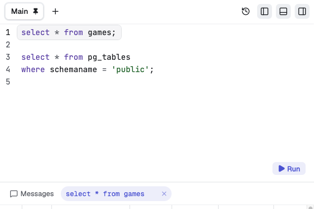
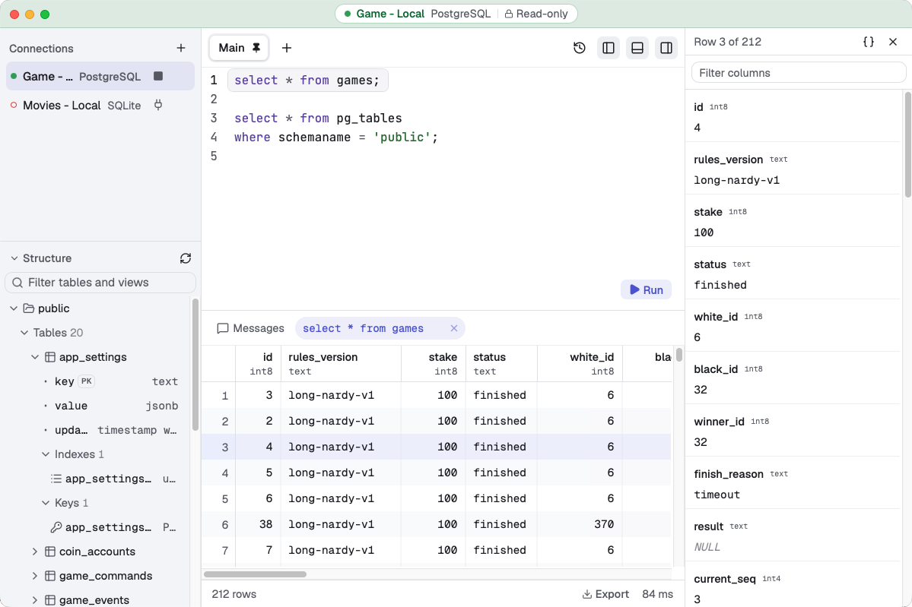
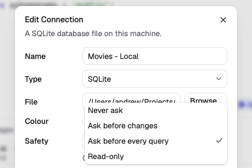
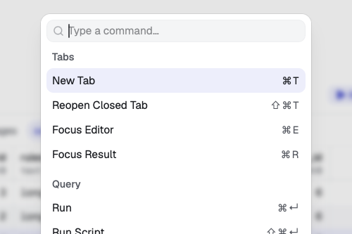
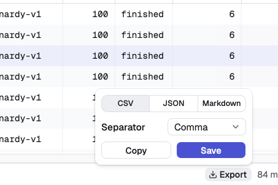

A proper SQL editor
Syntax highlighting and autocomplete for keywords, tables, and columns. Run the statement under the cursor, a selection, or the whole script. Cancel a long-running query when you need to.
Write SQL, explore your databases, and work with results in a focused desktop app.
Free and open source. Apple Silicon · macOS 15 or later.
brew install --cask abogoyavlensky/tap/quel
Works with
Write queries, browse database structure, and inspect and export results.

Syntax highlighting and autocomplete for keywords, tables, and columns. Run the statement under the cursor, a selection, or the whole script. Cancel a long-running query when you need to.

Choose a confirmation policy for each connection. Read-only mode blocks recognized writes and asks before unfamiliar statements. Data changes happen through SQL you write.

Open the command palette, type a few letters, and go. Most actions have shortcuts, from switching tabs to running a query and focusing its results.

Save results as CSV, JSON, or Markdown. Or copy them straight to the clipboard for a spreadsheet, a script, or a pull request.
Rows load as you scroll. Keep several results open, and pin the ones you want to compare.
Inspect a row in the side panel, with formatted JSON to make nested values easier to read.
Editor tabs save as you type and return on the next launch. Closed a tab too soon? Reopen it.
Keep several databases connected at once, with a color for each to help tell them apart.
Browse schemas, tables, views, and more. Expand a table to see its columns, indexes, and keys.
Download and install new versions from Quel, keeping your connections, tabs, and passwords.
Quel contacts GitHub to check for and download app updates.
Connection passwords are stored in the Keychain, never in Quel’s own database.
Connection profiles and editor tabs are saved locally. No analytics or usage reporting.
Free and open source under the MIT license.
For Apple Silicon Macs running macOS 15 or later.
Signed and notarized. Unzip the download and move Quel.app to Applications.
brew install --cask abogoyavlensky/tap/quelQuel is still early in development. Bug reports and ideas are welcome.